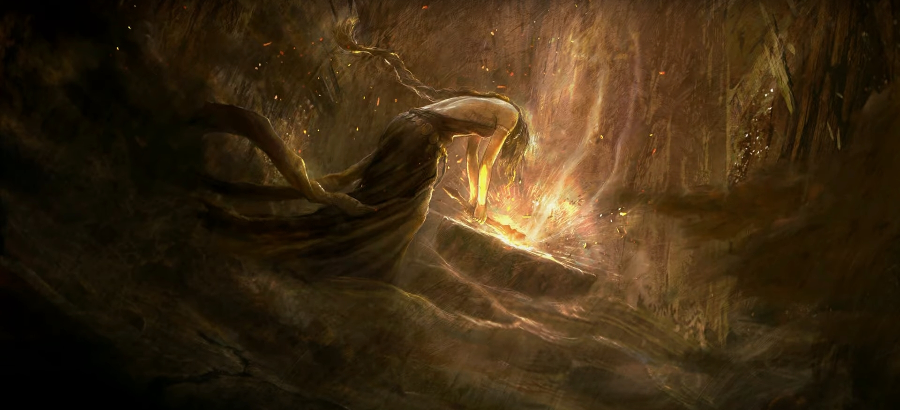

Queen Marika the Eternal
Queen Marika the Eternal
Class: Empyrean, God | Affiliation: Golden Order
Queen Marika the Eternal is the sovereign of the Lands Between and the vessel of the Elden Ring. As the central figure in the lore of Elden Ring, Marika's actions and decisions have shaped the fate of the world and its inhabitants. Her divine status and complex motivations make her one of the most intriguing characters in the game.
Character Traits
- Divine Power
- Leadership
- Complex Motivations